Oleg Brovchenko is a creative producer and filmmaker based in Madrid. Born in Ukraine, he picked up a camera at 14 and taught himself everything. In 2015 he left for Spain and rebuilt from zero, not speaking a word of Spanish.
What followed was a climb from barbershop videos in Lorca to directing productions for some of Spain’s biggest urban artists: 219 music videos for 54 artists, with over 744 million views on YouTube. In 2024 he founded Full Drill Production S.L., which managed over €1M in production budgets in its first full year.
Today he runs a one-man AI-powered studio: an AI content operation handles the machine work while he directs, films, and documents how it’s done for the next generation of creators.
The journey
- 2011Picks up a camera at 14 in Ukraine. Self-taught from day one.
Read more
Fourteen years old, a small city in Ukraine, a first camera, and nobody around to teach him what to do with it. No film school, no mentors, no industry within reach. The education was tutorials, trial, and error, and the discipline of filming anything that moved: friends, streets, whatever the day offered.
Within two years he had fallen into the rabbit hole that would define his eye more than anything else: color grading. Starting around 2012 he graded footage obsessively, more than a decade before grading ever paid him a euro. That head start is why grading later became both his signature on screen and the foundation of his product line. Everything that follows on this page grew from those first self-taught years.
- 2015Leaves Ukraine. Three days in a van to Lorca, Spain. Zero Spanish, zero contacts.
Read more
The war that began in 2014 changed everything at home, and in 2015 he left. The trip itself became family legend: three days in a van across Europe, ending in Lorca, a small town in the Murcia countryside, about as far from any film industry as Europe gets.
He arrived speaking only Ukrainian and Russian. New language, new country, no contacts, no safety net, and a camera as the only plan. He learned Spanish from zero while figuring out how a teenager with no papers in the industry could keep shooting. The years in Lorca were slow and unglamorous, and they built the stubbornness that carried every later chapter.
- 2018First paid work: barbershop videos in Lorca. First music video the same year.
Read more
The first money the camera ever made came from a local barbershop and from makeup artists around Lorca: small productions for small businesses, shot alone, edited alone, delivered alone. The same year brought the first music video, for a DJ from the neighboring town of Aguilas.
None of it was glamorous, and all of it mattered: it proved the camera could pay, it taught him to deal with real clients with real expectations, and it started an unbroken streak. From 2018 on, filmmaking never stopped being his income. No day job, no side hustle, the camera carried everything.
- 2019Goes full-time creating content for a Murcia tattoo studio. Three and a half years of daily reps.
Read more
At the end of 2019 he went full-time at a tattoo studio in Murcia, as the content and camera person for the studio and its barbershop. On top of the on-site work, he remotely managed the studio’s Los Angeles operation, running the online presence of more than twenty tattoo artists at once.
Three and a half years of daily reps: shooting every day, editing every day, grading every day in DaVinci Resolve, which had become his tool of choice in 2017 and never left the center of his workflow. These were the volume years, thousands of small pieces of content that nobody remembers individually, and exactly the training that made the big productions later feel manageable. Skill is built where nobody is watching.
- 2021First work with Saiko: “Cosas que no te dije”, out in September, becomes the biggest credit of his career, now past 125M views.
Read more
In the summer of 2021 he shot his first work with Saiko, and “Cosas que no te dije” became the biggest credit of his career: past 125 million views on YouTube and hundreds of millions of streams, with his name in the intro, the outro, and the description of a song the whole country knew.
- 2022First professional crewed production (“Ice en mi cuello”, Camin). “Esquina” ft. JC Reyes hits 13M views and gold. Gear stolen the same year, the story reaches national TV. Rebuilds.
Read more
The turning point started as a party. One night in a house in the Sierra Nevada put him in a room with Spain’s next wave of urban artists and the people around them, and the connections made that night changed the trajectory. Camin’s team hired him, and “Ice en mi cuello” became his first true production with an assembled crew: the moment he stopped being a solo shooter and started running sets.
That summer, “Esquina” with JC Reyes exploded past 13 million views and went gold, and a second Camin video crossed 10 million more. The artists he filmed were becoming national names, and his name traveled with the credits.
Then the year tested him. Thieves smashed his car window and took the gear and the hard drives that held his working life, years of work and every tool he owned. The post about it reached hundreds of thousands of people, artists reshared it, and the story made national television. He rebuilt the kit piece by piece, upgraded in the process, and kept shooting. The lesson stuck: everything can disappear in one night, and the only unstealable asset is the skill.
- 2023Moves to Madrid. Handles his first six-figure production budget.
Read more
The scale of everything changed that year. He handled his first six-figure production budget, the kind of job a freelancer cannot even invoice alone, which planted the seed of what would become his company. In the summer he moved to Madrid, where the artists, the labels, and the productions actually live. Local was over. From here on, the work was national.
- 2024Founds Full Drill Production S.L. Leads the audiovisual production of Saiko’s “Sakura” rollout, one of the year’s most anticipated Spanish albums. €1M+ in budgets managed in the company’s first year.
Read more
Full Drill Production S.L. was born in the middle of the storm: the “Sakura” album, at the moment Saiko was the most listened-to artist in Spain and the album was among the most anticipated releases in Spanish music that year. He led its audiovisual production, delivering the visual rollout in under three months, seven days a week, on thirteen-hour days and longer.
From that era came some of the biggest numbers of his catalog: “POLARIS (Remix)” with Feid, Quevedo, and Mora past 90 million views, “BADGYAL” past 45 million, “SUPERNOVA” past 25 million. The company moved more than a million euros in production budgets in its first full year, with him at the wheel of every shoot.
When the album dropped, the summer became a tour: Bilbao, Barcelona, Cadiz, Sevilla, Marbella, and more, traveling Spain with the camera in hand. It was the most intense year of his life, and the proof that a self-taught kid from Ukraine could run productions at the top of a national industry.
- 2025Publishes a 3-hour documentary telling the whole story, his last video in Spanish. Goes all-in on English content.
Read more
The client roster stayed heavy: album work for Fernando Costa at the start of the year, productions for RVFV, and projects with Trico that took him to France. But the real event of 2025 was a decision, not a delivery.
In August 2025 he published a three-hour documentary telling the entire story on this page in his own words, from Ukraine to the top of Spanish music video production. He announced it as his last video in Spanish, ever. From that day, everything he publishes is in English, aimed at a global audience of creators: a deliberate trade of a comfortable national position for a bigger game.
- 2026219 music videos for 54 artists, 744M+ views on YouTube. Builds an AI content operation that runs the machine work while he creates.
Read more
A full count of every YouTube video carrying his name or Full Drill Production, made in November 2026: 219 music videos for 54 artists and over 744 million views, from Saiko, Camin, Cano, Fernando Costa, RVFV and Aissa to DUKI, Munic HB and 24KEEFY. The year runs on both engines at once: touring Spain filming RVFV’s live shows as part of the camera team, and directing new productions.
Behind the scenes, the biggest build of the year is not a video. It is an AI content operation, a system of AI agents he directs like a crew, handling the machine work of content production so the human hours go where they matter: filming, directing, deciding. It is the same bet as 2011, made with new tools, and he documents it in public for the next generation of creators.
Selected work
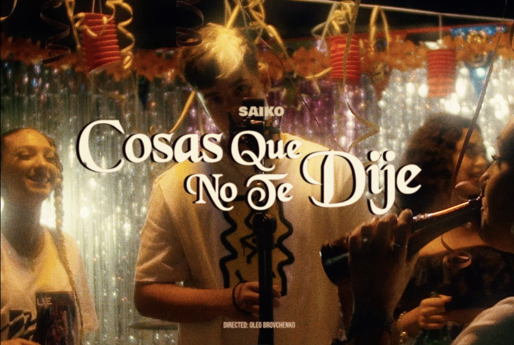
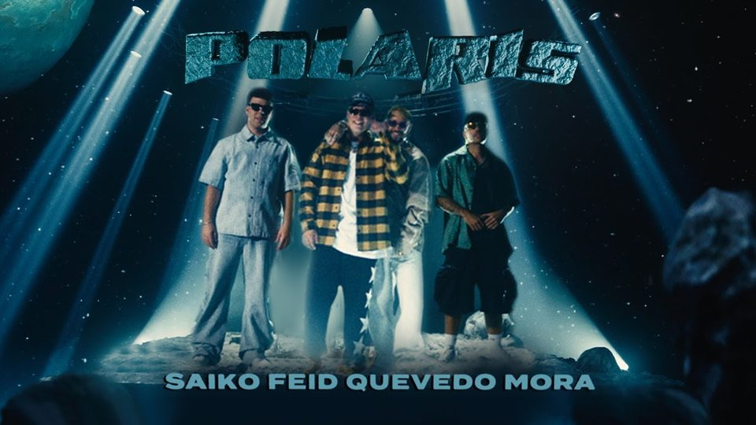
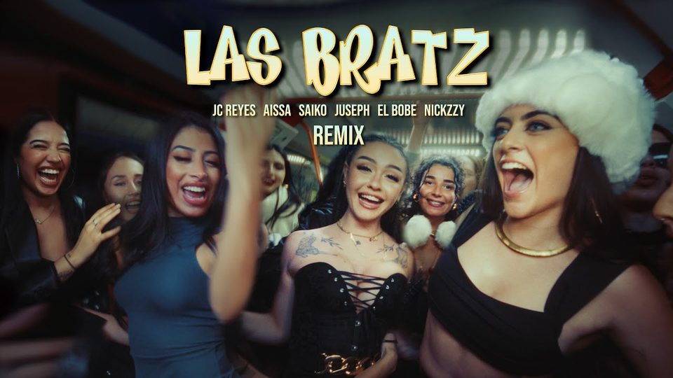
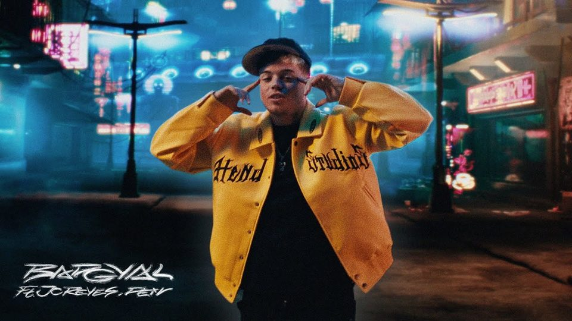
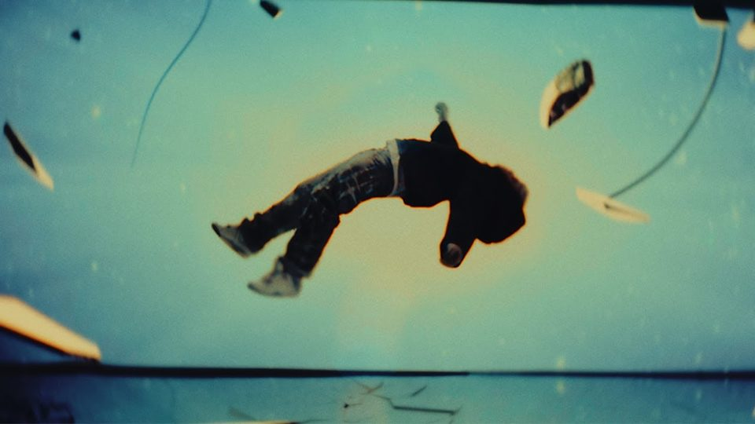
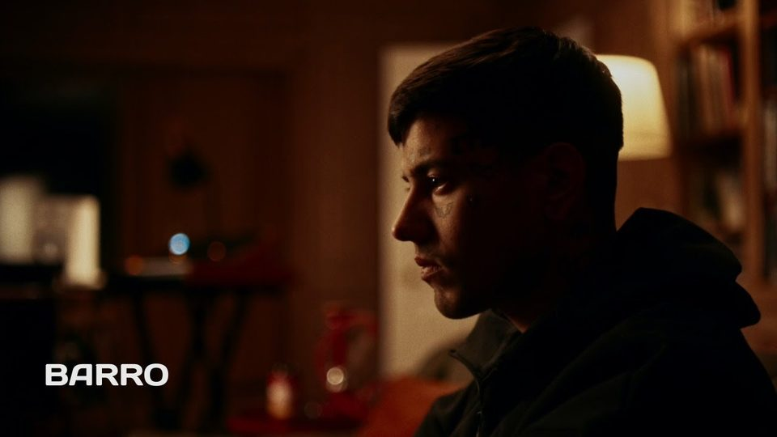
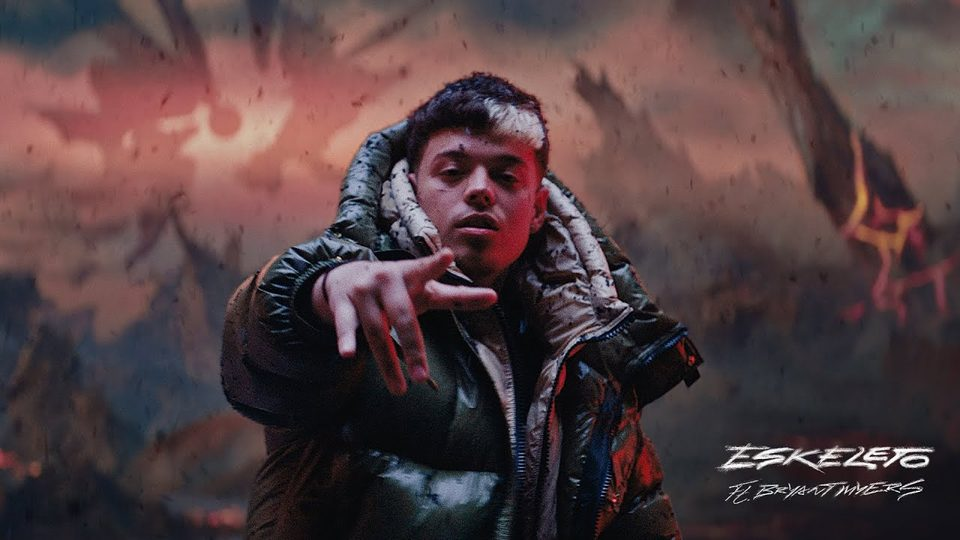
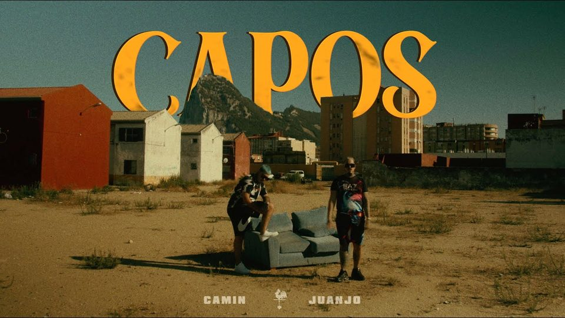
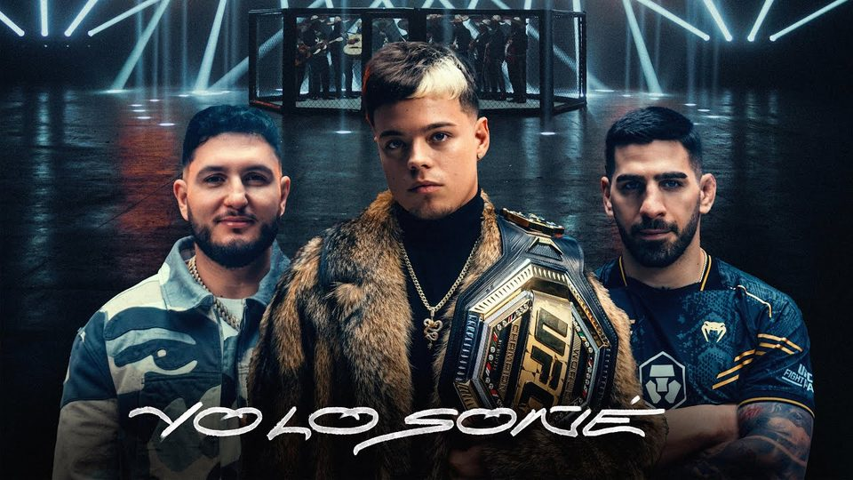
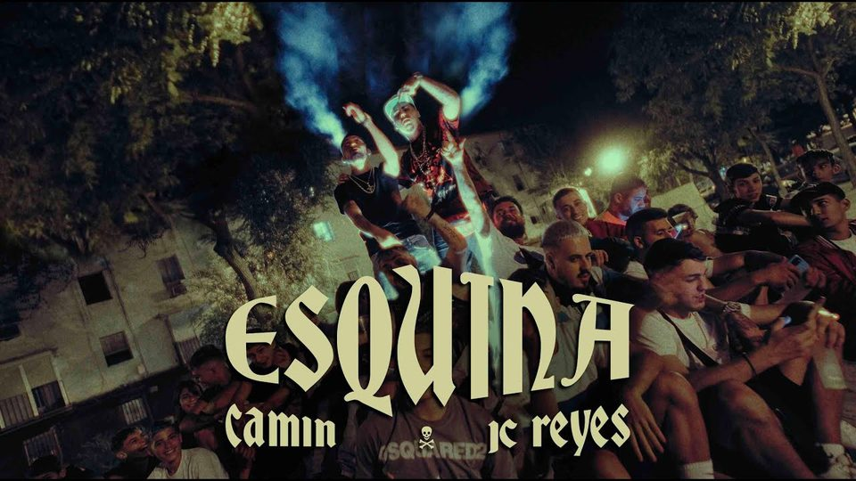
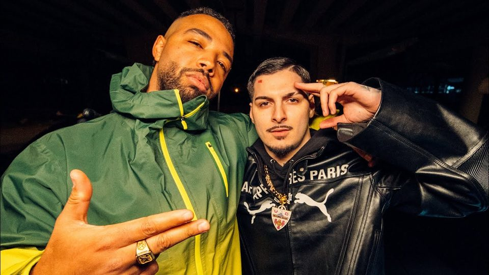
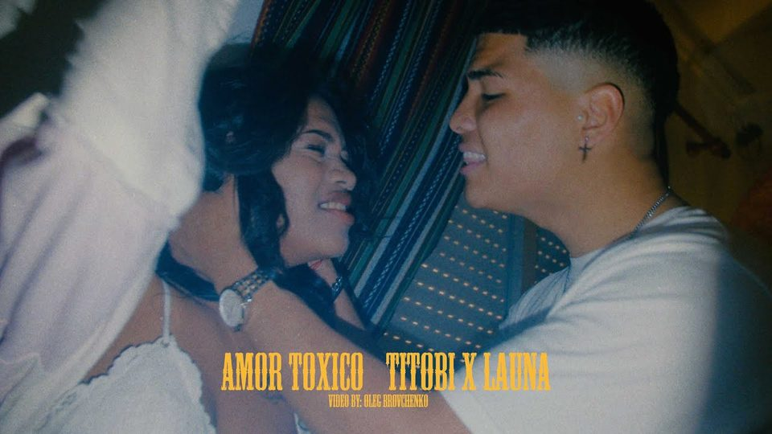
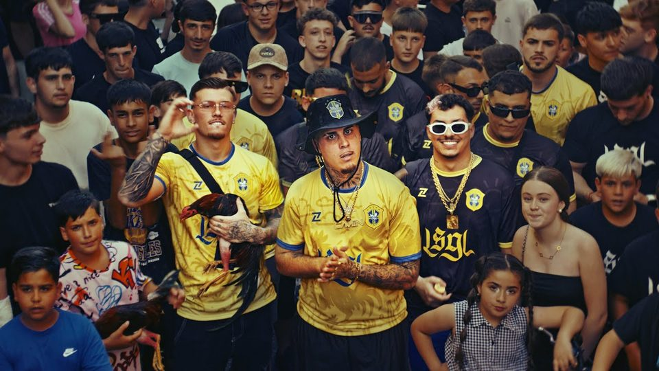
The full count: 219 music videos for 54 artists, among them Saiko (32), Camin (28), Cano (20), Fernando Costa (15), RVFV (15), Aissa (8), 24KEEFY (8), J Prince (7) and Kaydy Cain (6). YouTube views counted 22 November 2026.
Companies & work
Full Drill Production S.L.
Madrid production company behind the credits above. Over €1M in production budgets managed in its first full year.
Madrid · since 2024brovchenko.store
Color grading systems, textures, and tools for filmmakers, built from the same pipeline used on every credit on this page.
brovchenko.store →Topics
- Filmmaking
- Color grading · DaVinci Resolve
- Content strategy
- Building an AI content operation
Contact
Press & collaboration: press@olegbrovchenko.com
One email when something worth your time ships.